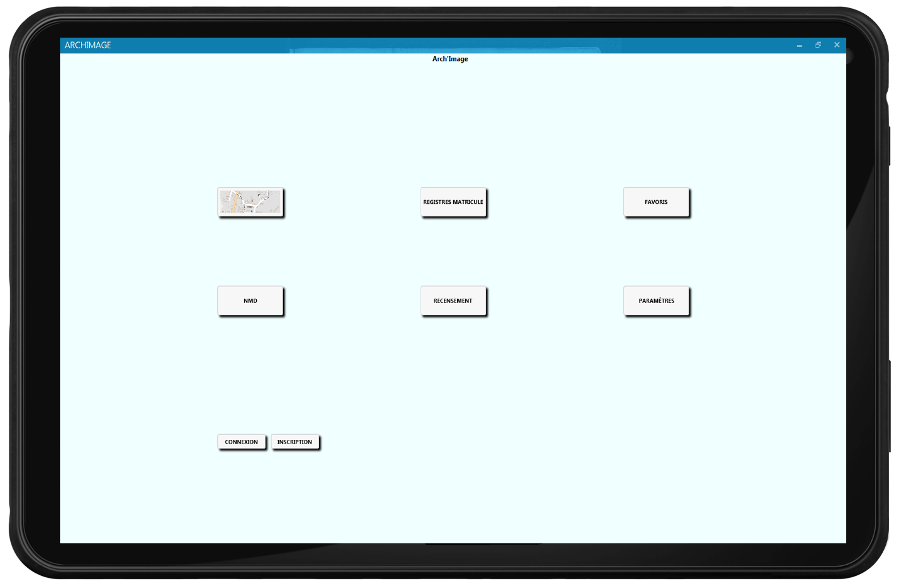
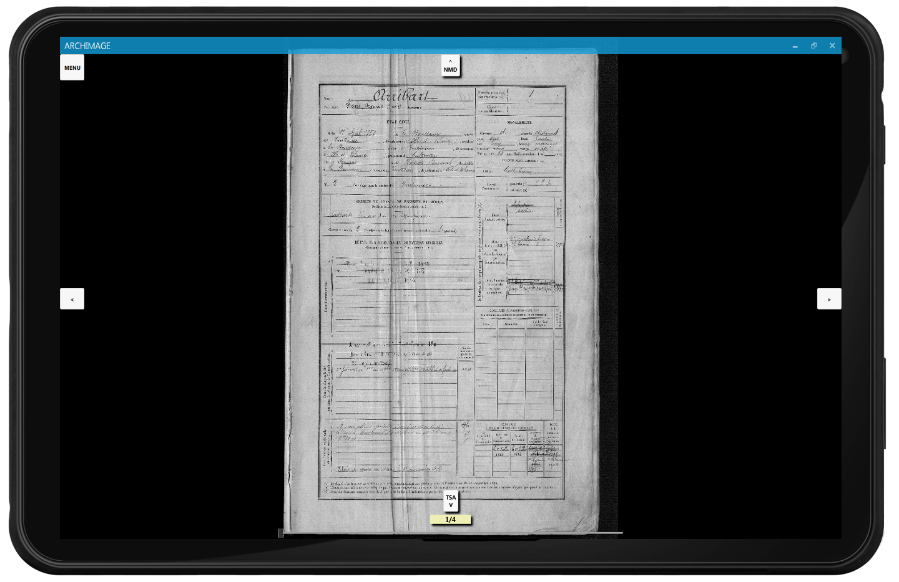

En cette année 2014, la commémoration du centenaire de la Grande Guerre (1914-1918) est une période importante pour les Archives car c’est un moment où les familles et les personnes intéressées par cette part de l'histoire veulent en savoir plus, en particulier sur les soldats morts au combat.
Ce projet s’articule autour d’une problématique de navigation. En effet, les Archives disposent d’une quantité immense de documents manuscrits et le problème majeur est de pouvoir retrouver facilement un document précis. L’objectif principal est donc de créer un outil de navigation à travers les documents d’Archives (registres matricules, recensement, actes de mariage, naissance ou décès, ...) et surtout de concevoir un outil qui soit agréable à utiliser.
Pour ce faire, nous allons nous baser sur les photos des stèles commémoratives d’une commune d’Ille-et-Vilaine, Trans-la-Forêt. Ces stèles seront représentées sur une carte. Il s'agit alors de créer une navigation entre les documents, liés par des points d'intérêts, aux personnes présentes sur les stèles. Cette navigation ne sera pas linéaire car si un nom apparaît dans un document, l’utilisateur pourra alors accéder aux autres documents associés à cette personne. Pour créer ces relations entre documents, il faudra que des utilisateurs experts puissent les annoter pour que la navigation soit la plus riche possible.
 
La fonctionnalité principale de notre application est de pouvoir naviguer à travers les divers documents des archives (registres militaires, actes de naissance, …) de manière intuitive et rapide. Afin de fluidifier la navigation, les noms présents sur les documents seront des points d’intérêt permettant d’accéder aux autres documents concernant la personne. Il y a également la possibilité de consulter les documents de manière plus classique, les uns après les autres.
La navigation pourra commencer de plusieurs façons : soit en choisissant une des catégories, soit en utilisant une carte interactive de Trans-la-Foret (35). Sur celle-ci apparaîtront deux points d’intérêts : le monument aux morts, et la stèle de l’église. Les noms qui y sont inscrits seront autant de groupes de documents avec lesquels commencer sa navigation.
Le deuxième intérêt de ce logiciel est l’annotation. Le personnel des archives, à qui il est destiné, pourra créer un compte et s’y connecter. Après cela, l’utilisateur pourra indiquer où se trouvent les noms sur les documents et qui ils référencent. L’application s’occupe ensuite de mettre un point d’intérêt sur le nom qui mènera aux documents concernant la personne.
Notre équipe est constituée de Charles COLLOMBERT, Cédric JÉZÉQUEL, Fabien L'HÉRIAU, Pierre LAUPRÊTRE, Vincent LEMORDANT et Kévin THEK, dont seulement la moitié s’occupe du développement de l’application, pour cause de stages à l’étranger. Nous travaillons bien sûr directement avec les archives d’Ille-et-Vilaine, mais sommes également encadrés par un chef de projet d’Atos, qui nous aide à mener à bien celui-ci. Enfin, nous nous servons de projets existants, à savoir ceux des 4INFO des années précédentes (pour le design des points d’intérêts), ainsi que de Sewelis, un outil de web sémantique créé par Sébastien Ferré (IRISA), qui nous permettra d’agencer nos données au mieux.